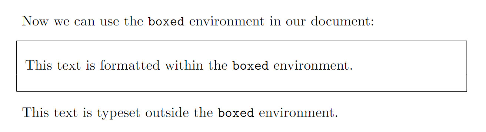

Environments
LaTeX environments are used to apply specific typesetting effect(s) to a section of your document’s content. This article explains how to use existing environments and define new ones.
Introduction
An environment starts with \begin{name} and ends with \end{name}:
\begin{name}
Your content here...
...goes here...
\end{name}where “name” is the name of the environment being used—such as the following example using “center” to format (center) a paragraph of text:
\documentclass{article}
\begin{document}
\begin{center}
This is a demonstration of the \texttt{center} environment.
This paragraph of text will be \textit{centred} because it is
contained within a special environment. Environments provide
an efficient way to modify blocks of text within your document.
\end{center}
\end{document}
Open this example in Overleaf.
This example produces the following output:
Environments
The following example uses the tabular environment to typeset a small table. tabular takes an additional argument { c c c } which defines the alignment of the cells—see the Tables article for more information.
\documentclass{article}
\begin{document}
\begin{tabular}{ c c c }
cell1 & cell2 & cell3 \\
cell4 & cell5 & cell6 \\
cell7 & cell8 & cell9 \\
\end{tabular}
\end{document}
Open this example in Overleaf.
This example produces the following output:
Some environments accept optional arguments which are usually passed inside brackets ([...]).
Defining a new environment
To define a new environment use the \newenvironment command which has the general form:
\newenvironment{name}[numarg][optarg_default]{begin_def}{end_def}where:
nameis the name of this user-defined argument;numargis the number of arguments, from 1 to 9, this environment accepts. If[numarg]is omitted then the environment does not accept any arguments—such as theboxedenvironment defined in the next example;optarg_defaultmakes the first argument optional and provides a default value—i.e., it is the value used if an optional argument value is not provided;begin_defis LaTeX code executed when the environment starts (opens), i.e., when you write\begin{name}. Within this code you can use arguments accepted by the environment—note that the optional argument is #1 and the remaining arguments are accessed using #2 to #numarg;end_defis LaTeX code executed when the environment ends (closes); i.e., when you write\end{name}. You cannot use any of the arguments within this code section.
Defining simple environments
In this first example, we define the boxed environment which does not take any arguments. It draws a box around text contained within the environment:
\documentclass{article}
%We can define the environment in the preamble
\newenvironment{boxed}
{\begin{center}
\begin{tabular}{|p{0.9\textwidth}|}
\hline\\
}
{
\\\\\hline
\end{tabular}
\end{center}
}
%
\begin{document}
Now we can use the \texttt{boxed} environment in our document:
\begin{boxed}
This text is formatted within the \texttt{boxed} environment.
\end{boxed}
This text is typeset outside the \texttt{boxed} environment.
\end{document}
Open this example in Overleaf.
This example produces the following output:

If we compare our definition of boxed with the general form of \newenvironment we can see:
nameisboxed;- neither
[numarg]or[optarg_default]are provided because this environment does not take any arguments; begin_defis the LaTeX code—provided between a pair of braces{...}—which is executed when the environment starts (opens):
\begin{center}
\begin{tabular}{|p{0.9\textwidth}|}
\hline\\
end_defis the LaTeX code—provided between a pair of braces{...}—which is executed when the environment stops (closes):
\\\\\hline
\end{tabular}
\end{center}
In the example, begin_def starts a center environment and within that a tabular environment is opened to draw vertical lines and a horizontal line around the text we place in the environment. end_def draws another horizontal line then closes the tabular and center environments.
Defining environments which take arguments
Let’s enhance the previous example to do the following:
- use an optional argument to typeset a title. If a title is not provided, use the default value
This is a box; - use a second argument which contains material to typeset ahead of the text we provide within the environment itself.
So we have 2 arguments:
- the first (argument 1) is optional;
- the second (argument 2) is not.
This means numarg=2.
We can use the following definition of our updated boxed environment:
\newenvironment{boxed}[2][This is a box]
{\begin{center}
Argument 1 (\#1)=#1\\[1ex]
\begin{tabular}{{{!}}p{0.9\textwidth}{{!}}}
\hline\\
Argument 2 (\#2)=#2\\[2ex]
}
{
\\\\\hline
\end{tabular}
\end{center}
}
This enhanced version differs from the original in the following ways:
- [numarg] is present and has the value 2;
- [optarg_default] is also present, making the first argument optional with a default value
This is a box.
The following example demonstrates some uses of our upgraded boxed environment:
\documentclass{article}
% Note the default value for the first
% argument is provided by [This is a box]
\newenvironment{boxed}[2][This is a box]
{\begin{center}
Argument 1 (\#1)=#1\\[1ex]
\begin{tabular}{|p{0.9\textwidth}|}
\hline\\
Argument 2 (\#2)=#2\\[2ex]
}
{
\\\\\hline
\end{tabular}
\end{center}
}
\begin{document}
\textbf{Example 1}: Use the default value for the first argument:
\begin{boxed}{Some preliminary text}
This text is \textit{inside} the environment.
\end{boxed}
This text is \textit{outside} the environment.
\vskip12pt
\textbf{Example 2}: Provide a value for the first argument:
\begin{boxed}[This is not the default value]{Some more preliminary text}
This text is still \textit{inside} the environment.
\end{boxed}
This text is also \textit{outside} the environment.
\end{document}
Open this example in Overleaf.
This example produces the following output:
Numbered environments
Numbered environments can be created either manually or directly with the command \newtheorem, as demonstrated by the following example:
\documentclass{article}
% Define our numbered environment within the preamble
\newcounter{example}[section]
\newenvironment{example}[1][]{\refstepcounter{example}\par\medskip
\noindent \textbf{Example~\theexample. #1} \rmfamily}{\medskip}
% Another numbered environment defined with \newtheorem
\usepackage{amsmath} % For the \newtheorem command
\newtheorem{SampleEnv}{Sample Environment}[section]
\begin{document}
\section{User-defined numbered environments}
\begin{example}
First user-defined numbered environment (number \theexample).
\end{example}
\begin{example}
Second user-defined numbered environment (number \theexample).
\end{example}
\section{More user-defined numbered environments}
Note how the example numbering has restarted at 1:
\begin{example}
First user-defined numbered environment (number \theexample).
\end{example}
\begin{SampleEnv}
User-defined environment created with the \verb|\newtheorem| command.
\end{SampleEnv}
\end{document}
This example produces the following output:
Some notes
- In the manually-defined
exampleenvironment the command\newcounter{example}[section]creates a counter, also calledexample. Theexamplecounter is:- incremented by 1 by using
\refstepcounter{example}within the environment definition; - reset every time a new
\section{...}is started; - a variable whose current value can be typeset using
\theexample. See the article about counters to learn more.
- incremented by 1 by using
- The command
\newtheoremdirectly creates a numbered environment and takes three parameters:- the name of the new environment:
SampleEnvin our example; - the text to be printed in bold at the beginning of the line:
Sample Environmentin our example; - an optional parameter which determines when the counter is reset; and if it’s used the counter gets preceded by that reset counter’s value:
sectionin our example.
- the name of the new environment:
The amsthm package, along with amsmath, provide useful extra definitions alongside \newtheorem; see Theorems and proofs for further details.
Redefining existing environments
Environments can be redefined using \renewenvironment whose syntax is the same as \newenvironment—see the section Defining a new environment for an explanation of the various parameters:
\newenvironment{name}[numarg][optarg_default]{begin_def}{end_def}The next example redefines the itemize environment—this is only an example to illustrate the process, it should not be considered within a real document. The new itemize environment no longer produces a bulleted list; instead, it centres and emphasizes (italicizes) the text within it (using the \em command).
\documentclass{article}
% Redefine the environment in the preamble
\renewenvironment{itemize}
{\begin{center}\em}
{\end{center}}
\begin{document}
\begin{itemize}
We have redefined the \texttt{itemize} environment so that any text
within it is centred and emphasised (italicized). It no longer creates
a bulleted list---this is only an example and not intended for use
in real documents!
\end{itemize}
\end{document}
Open this example in Overleaf.
This example produces the following output:
Further reading
For more information see:
Overleaf guides
- Creating a document in Overleaf
- Uploading a project
- Copying a project
- Creating a project from a template
- Using the Overleaf project menu
- Including images in Overleaf
- Exporting your work from Overleaf
- Working offline in Overleaf
- Using Track Changes in Overleaf
- Using bibliographies in Overleaf
- Sharing your work with others
- Using the History feature
- Debugging Compilation timeout errors
- How-to guides
- Guide to Overleaf’s premium features
LaTeX Basics
- Creating your first LaTeX document
- Choosing a LaTeX Compiler
- Paragraphs and new lines
- Bold, italics and underlining
- Lists
- Errors
Mathematics
- Mathematical expressions
- Subscripts and superscripts
- Brackets and Parentheses
- Matrices
- Fractions and Binomials
- Aligning equations
- Operators
- Spacing in math mode
- Integrals, sums and limits
- Display style in math mode
- List of Greek letters and math symbols
- Mathematical fonts
- Using the Symbol Palette in Overleaf
Figures and tables
- Inserting Images
- Tables
- Positioning Images and Tables
- Lists of Tables and Figures
- Drawing Diagrams Directly in LaTeX
- TikZ package
References and Citations
- Bibliography management with bibtex
- Bibliography management with natbib
- Bibliography management with biblatex
- Bibtex bibliography styles
- Natbib bibliography styles
- Natbib citation styles
- Biblatex bibliography styles
- Biblatex citation styles
Languages
- Multilingual typesetting on Overleaf using polyglossia and fontspec
- Multilingual typesetting on Overleaf using babel and fontspec
- International language support
- Quotations and quotation marks
- Arabic
- Chinese
- French
- German
- Greek
- Italian
- Japanese
- Korean
- Portuguese
- Russian
- Spanish
Document structure
- Sections and chapters
- Table of contents
- Cross referencing sections, equations and floats
- Indices
- Glossaries
- Nomenclatures
- Management in a large project
- Multi-file LaTeX projects
- Hyperlinks
Formatting
- Lengths in LaTeX
- Headers and footers
- Page numbering
- Paragraph formatting
- Line breaks and blank spaces
- Text alignment
- Page size and margins
- Single sided and double sided documents
- Multiple columns
- Counters
- Code listing
- Code Highlighting with minted
- Using colours in LaTeX
- Footnotes
- Margin notes
Fonts
Presentations
Commands
Field specific
- Theorems and proofs
- Chemistry formulae
- Feynman diagrams
- Molecular orbital diagrams
- Chess notation
- Knitting patterns
- CircuiTikz package
- Pgfplots package
- Typesetting exams in LaTeX
- Knitr
- Attribute Value Matrices
Class files
- Understanding packages and class files
- List of packages and class files
- Writing your own package
- Writing your own class